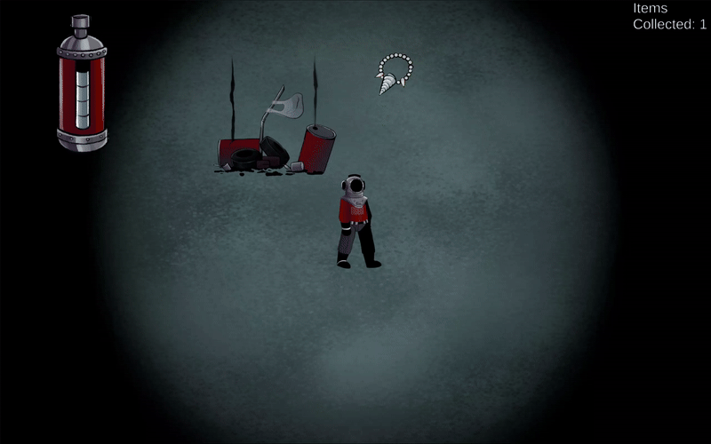

Memory Dive

Core gameplay loop of collecting items while avoiding the monster. (Main View)

Collecting an item & gaining oxygen.
About the Project
Memory Dive was my first-ever game jam project, created in one week for the Unpolished Game Jam.
As the solo developer on a three-person team, I was responsible for all programming.
The game is an underwater stealth-horror experience where players must collect lost objects while managing their oxygen
and hiding from a mysterious creature that stalks them.
Technical Highlights
- Centralized Game Manager: A robust `GameManager` class controls the main game loop, handling win/loss conditions, UI updates (item collection, memory text), audio cues, and event-based monster spawning.
- State-Based Enemy AI: The monster's AI switches between states, patrolling randomly when the player is hidden and actively pursuing them when they are exposed. Its spawning and despawning are tied to a timer to create waves of tension.
- Player State & Resource System: Separate scripts manage player states (`PlayerController`), stats (`PlayerStats`), and actions (`PlayerHiding`, `PlayerCollector`). The oxygen system depletes over time, can be replenished, and uses a bracketed system to trigger different UI and audio feedback.
- Modular Stealth Mechanic: The hiding system is simple but effective; entering a "HideSpot" tag triggers a state change in the `PlayerController`, which the `MonsterAI` checks before deciding whether to chase the player.
Development Focus
- Building a complete game loop from scratch under a tight, one-week deadline.
- Implementing foundational gameplay systems: player movement, resource management, stealth, and collection.
- Creating a simple but effective enemy AI to serve as the core threat.
- Learning to scope a project appropriately for a game jam.
What I Learned
- Interdisciplinary Collaboration: Gained valuable experience as the sole programmer working alongside an artist and a composer, learning to communicate technical needs and integrate their assets into the game.
- System Decoupling: Learned the importance of separating concerns into different scripts (e.g., `PlayerMovement`, `PlayerStats`, `PlayerHiding`). This made the code cleaner and easier to debug under pressure.
- Event-Driven Game Flow: Developed a better understanding of how to use a central `GameManager` to listen for events (like collecting an item) and trigger reactions (like updating the UI or spawning the monster).
- AI State Logic: Implemented my first state-based AI, learning how to use simple boolean flags (like `isHiding`) to create dynamic and responsive enemy behavior.
- Scope Management in a Jam: This project was a crucial lesson in prioritizing core features and keeping systems simple but effective to ensure a finished, playable game was delivered on time.